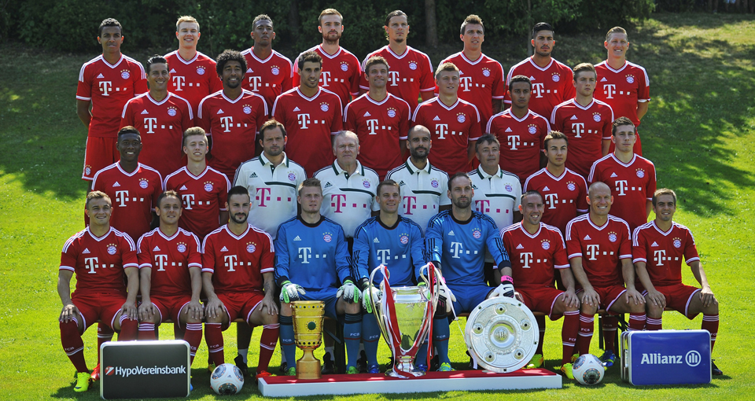

Home
Club Data
Stadium And Tickets
Legends
Squad
Results
Photo Gallery
Video Gallery
Achievments
Contact Us

Goalkeeper
1
Manuel Neuer
27/03/86
22
Tom Starke
18/03/81
32
Lukas Raeder
30/12/93
Defender
4
Dante
18/10/83
5
Daniel van Buyten
07/02/78
13
Rafinha
07/09/85
15
Jan Kirchhoff
01/10/90
17
Jerome Boateng
03/09/88
21
Philipp Lahm
11/11/83
26
Diego Contento
01/05/90
27
David Alaba
24/06/92
28
Holger Badstuber
13/03/89
Midfielder
6
Thiago Alcantara
11/04/91
7
Franck Ribery
07/04/83
8
Javier Martinez
02/09/88
10
Arjen Robben
23/01/84
11
Xherdan Shaqiri
10/10/91
19
Mario Götze
03/06/92
23
Mitchell Weiser
21/04/94
25
Thomas Müller
13/09/89
31
Bastian Schweinsteiger
01/08/84
34
Pierre Hojbjerg
05/08/95
39
Toni Kroos
04/01/90
Forward
9
Mario Mandzukic
21/05/86
14
Claudio Pizarro
03/10/78
20
Patrick Weihrauch
03/03/94
37
Julian Green
06/06/95